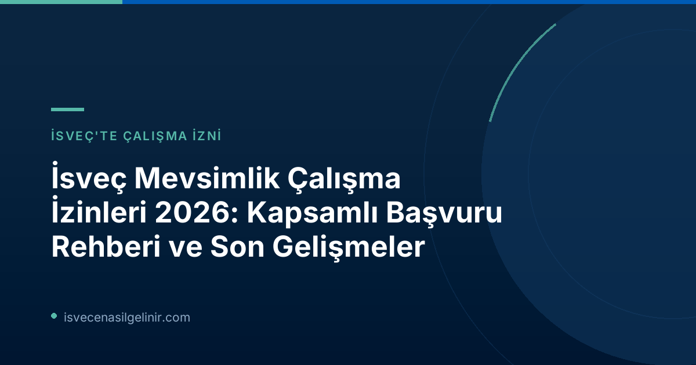

İsveç Mevsimlik Çalışma İzinleri 2026: Genel Bakış ve Güncel Çözümlemeler
Bu yıl Migrationsverket, mevsimlik işler için toplamda yaklaşık 3.400 çalışma izni başvurusunu onaylarken, 1.600 başvuruyu reddetti. Başvuruların büyük bir kısmı tarım, ormancılık ve yaban mersini toplama gibi sektörlerde yoğunlaştı. İsveç mevsimlik iş piyasası, özellikle yaz aylarında artan talebi karşılamak amacıyla her yıl Avrupa Birliği dışından binlerce işçiyi ağırlıyor. Yıllık ortalama 5.000 kişiye kadar başvuru alan bu sektör, hem istihdam olanakları sunuyor hem de bazı önemli riskleri barındırıyor.
Onaylanan ve Reddedilen Başvuruların Ardındaki Nedenler
Migrationsverket'e göre, onaylanan ve reddedilen başvuruların arkasında çeşitli faktörler yatıyor. Onaylanan izinlerin sayısı sektöre olan ihtiyacı gösterirken, reddedilen başvuru sayısı, denetimlerin ve yasalara uygunluğun önemini vurguluyor.
| Kategori | Sayı (2026) | Açıklama |
|---|---|---|
| Onaylanan Mevsimlik Çalışma İzinleri | 3.400 | Tarım, ormancılık, yaban mersini toplama gibi alanlarda |
| Reddedilen Mevsimlik Çalışma İzinleri | 1.600 | Çeşitli uygunsuzluklar nedeniyle |
| Yıllık Toplam Başvuru Sayısı | ~5.000 | AB dışından İsveç'e mevsimlik çalışmaya gelenler |
| AB Dışı Mevsimlik İşçi Çalıştıran Şirket Sayısı | ~200 | Ülke genelinde faaliyet gösteren firmalar |
| Yaban Mersini Toplama İzinleri (AB Direktifi) Onaylanan | 950 | Çoğunluğu Tayland vatandaşları |
| Yaban Mersini Toplama İzinleri (AB Direktifi) Reddedilen | ~600 | Çeşitli uygunsuzluklar nedeniyle |
Reddedilme Nedenleri:
- Şirketlerin Ekonomik Yetersizliği: Bazı şirketlerin, işçileri istihdam edecek yeterli ekonomik kapasiteye sahip olmaması.
- Çalışma Koşullarındaki Eksiklikler: İşçilere sunulan maaş, sigorta ve diğer çalışma koşullarının İsveç standartlarına veya toplu iş sözleşmelerine uymaması.
- Hatalı İlan Prosedürleri: İş ilanlarının kurallara uygun olarak (hem İsveç'te hem de AB içinde en az 10 gün boyunca) yayınlanmaması.
İş Gücü Sömürüsüyle Mücadele: Riskli Sektörler ve Ortak Çalışmalar
Migrationsverket, mevsimlik iş sektörünün bazı alanlarının iş gücü sömürüsü açısından riskli olduğunu belirtiyor. Özellikle ormancılık, yaban mersini toplama ve inşaat sektörleri, İsveç Cinsiyet Eşitliği Kurumu (Jämställdhetsmyndigheten) tarafından bu tür risklerin yüksek olduğu alanlar olarak tanımlanmıştır.
Migrationsverket, Merima Ilijašević'in de belirttiği gibi, bu sorunla mücadelede yalnızca tek başına hareket etmiyor. Polis, İsveç İş Çevre Ajansı (Arbetsmiljöverket), İsveç Vergi Dairesi (Skatteverket) ve yerel belediyeler gibi diğer otoritelerle iş birliği yaparak istismarları önlemeyi hedefliyor. Bu ortak çalışmalar, İsveç'in adil ve güvenli bir çalışma ortamı sunma taahhüdünün bir parçasıdır.
Yaban Mersini Toplayıcıları İçin Yeni Düzenlemeler (Haziran 2026)
Haziran 2026'da yürürlüğe giren yeni kurallar, ormanda yaban mersini toplama işinin, çalışma koşulları ne olursa olsun, artık tek başına çalışma izni hakkı vermeyeceğini belirtiyor. Bu, özellikle ormancılık sektöründeki potansiyel istismarları önlemeyi amaçlayan önemli bir değişikliktir.
Ancak, Migrationsverket yetkilisi Merima Ilijašević, yaban mersini toplayıcılarının çoğunun AB Mevsimlik Çalışma Direktifi kapsamında başvuru yaptığını ve bu yeni dışlama kuralından etkilenmediklerini vurguluyor.
AB Mevsimlik Çalışma Direktifi Kapsamında Yaban Mersini Toplama
2026 yılında Migrationsverket, AB Mevsimlik Çalışma Direktifi kapsamında yaban mersini toplamaya yönelik yaklaşık 1.500 başvuruyu karara bağladı. Tamamı Tayland vatandaşı olan bu başvuruların yaklaşık 950'si onaylanırken, yaklaşık 600'ü reddedildi.
AB Mevsimlik Çalışma İzni Direktifi Kapsamında Temel Şartlar
İsveç'te mevsimlik çalışma izni almayı hedefleyen ve AB Mevsimlik Çalışma Direktifi kapsamına giren adaylar için belirli temel şartlar bulunmaktadır. Bu şartlar, hem çalışanın haklarını korumak hem de İsveç iş piyasasının düzenini sürdürmek amacıyla belirlenmiştir. Bu süreçler, gelecekte İsveç vatandaşlığına başvurmayı düşünenler için de önemli bir deneyim teşkil edebilir. Örneğin, İsveç Vatandaşlık Sınavı hakkında bilgi edinmek, uzun vadeli hedefleriniz için faydalı olacaktır.
| Şart | Açıklama |
|---|---|
| Maaş ve Çalışma Koşulları | Lücret, sigorta ve diğer çalışma koşulları İsveç toplu iş sözleşmelerinden veya sektör uygulamalarından daha kötü olmamalıdır. Tam zamanlı çalışmada en düşük ücrete eşit veya daha yüksek bir maaş garanti edilmelidir (yarı zamanlı çalışma durumunda da). |
| Konaklama ve Sağlık Sigortası | Çalışan, izin süresi boyunca uygun standartlarda bir konaklama yeri ve kapsamlı bir sağlık sigortasına sahip olmalıdır. |
| İşe Alım Süreci | İşe alım prosedürü, İsveç'in AB içindeki taahhütlerine uygun olmalı ve iş ilanı hem İsveç'te hem de AB içinde en az 10 gün süreyle duyurulmalıdır. |
| Geri Dönüş Niyeti | Çalışan, mevsimlik izni sona erdikten sonra kendi ülkesine geri döneceğine dair niyetini ve kanıtını sunmalıdır. |
| AB İkamet Durumu | Çalışan, AB içinde ikamet etmiyor olmalıdır. |
İsveç'te Mevsimlik İş Arayanlara Tavsiyeler
İsveç'te mevsimlik iş arayanların, başvuru yapmadan önce yukarıda belirtilen şartları dikkatlice incelemesi ve ilgili tüm belgeleri eksiksiz hazırlaması büyük önem taşır. Özellikle iş sözleşmelerinin detaylarını, maaş ve sigorta koşullarını titizlikle kontrol etmek, olası sorunların önüne geçecektir. Migrationsverket ve diğer ilgili kurumlar, iş gücü sömürüsünü engellemek için denetimlerini sıkılaştırmış durumdadur, bu nedenle yasalara uygun hareket eden işverenlerle çalışmak esastır.
Referanslar
İsveç Hakkında Daha Fazla Bilgi Edinin
İsveç'te yaşam, çalışma ve göçmenlik süreçleri hakkında merak ettikleriniz mi var? Uzman ekibimizle şimdi iletişime geçin veya diğer faydalı kaynaklarımızı keşfedin.